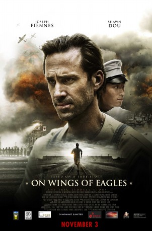

#9227 Wings of Freedom - Auf den Schwingen der Freiheit
 
 IMDB-Wertung: 5.8 / 10
IMDB-Wertung: 5.8 / 10  Metascore: 0
Metascore: 0 
Eric Liddell may have won gold for the United Kingdom and possessed a lilting Highland brogue, but he was born in China and lived more than half his life there evangelizing and teaching. On Wings of Eagles is everything you ever wanted to know about what happened to Liddell - who famously refused to run an Olympic race on a Sunday to honor God - after the 1924 Olympics when he returned to China, the home of his heart. But Eric's beloved homeland is about to be occupied by Imperial Japan.
Jahr: 2016
Dauer: 96 Minuten
FSK: 12
Land: China Studio: Koch MediaTonspuren: DTS - ,
Untertitel: Deutsch,
Auflösung: 1080p (1920x800) Größe: 4771 MB
Genre: Drama, Sport, Geschichte
Regisseur: Stephen Shin, Michael Parker
Drehbuch: Rubby Xu
Soundtrack: Scott Greer
Darsteller:
 Joseph Fiennes als Eric Liddell
Joseph Fiennes als Eric Liddell Bruce Locke als Old Xu Niu
Bruce Locke als Old Xu Niu- Shawn Dou als Xu Niu
- Richard Sanderson als Dr. Hubbard
- Augusta Xu-Holland als Catherine Standish
- Elizabeth Arends als Florence Liddell
- Jesse Kove als Hugh Johnson
- Simon Twu als Chen Quan
- Shigeo Kobayashi als Yoshinori Yumoto
- Darren Grosvenor als Gentleman
- Patrice Poujol als Louis Klein
- Zach Ireland als David Marshall
- Laura Justine Friis Lodahl als Patricia Liddell
- Asta Friis Lodahl als Heather Liddell
Datei: X:\2016(N-Z)\Wings of Freedom - Auf den Schwingen der Freiheit (2016, FSK12, 1920x800).mkv seit 20.07.2018
Festplatte: HD 2016(A-Z)
 Es gibt insgesamt 182 Filme in der Gruppe '2016(N-Z)'
Es gibt insgesamt 182 Filme in der Gruppe '2016(N-Z)'